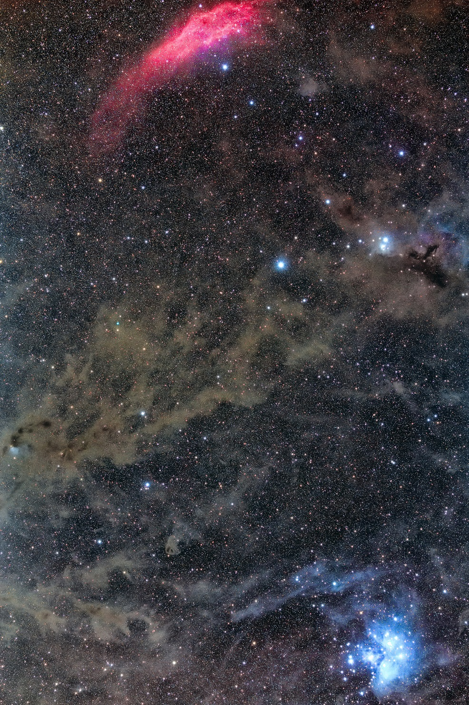
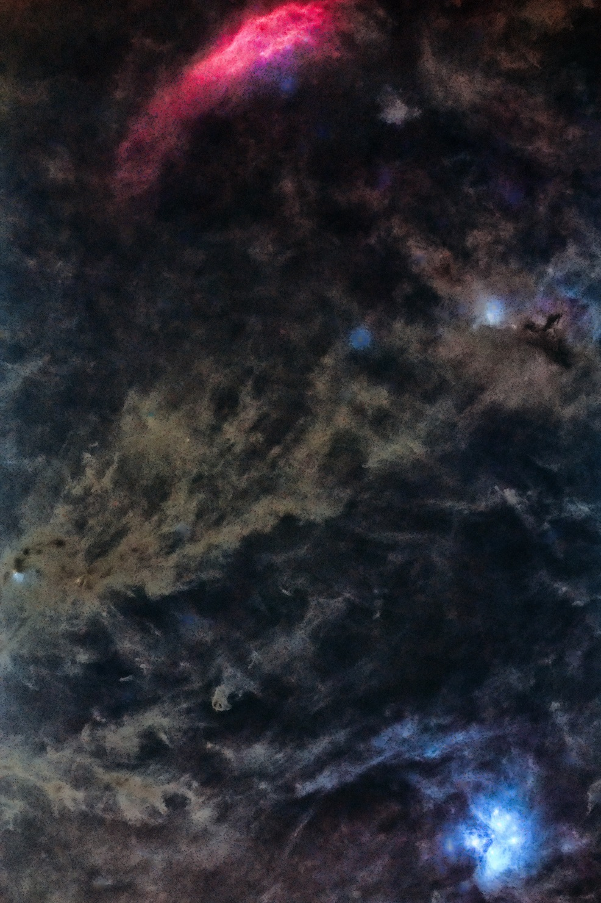
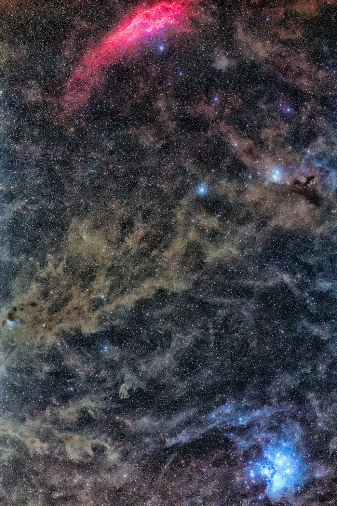
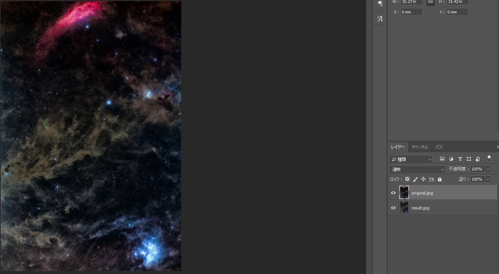
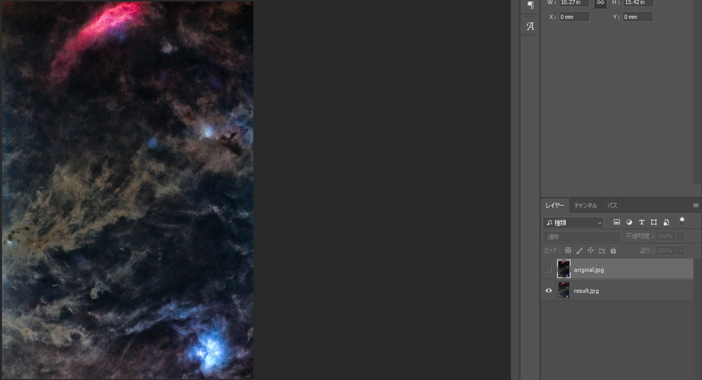
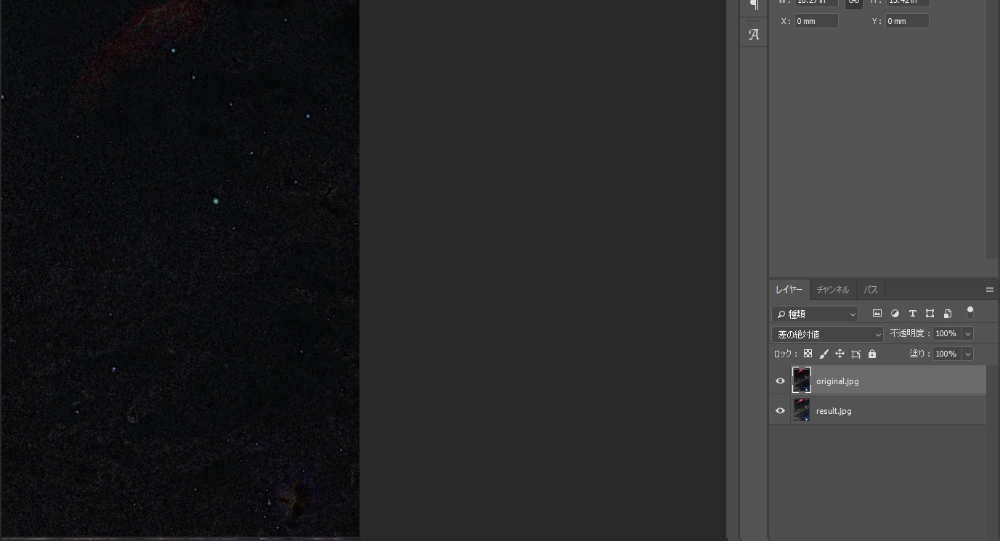

<!DOCTYPE html>
<html>

<head><meta name="generator" content="Hexo 3.8.0">
  <meta charset="utf-8">
  
  <title>【完全に乗り遅れ感】StarNet++を使ってみた | ほしよみ大学生のブログ</title>
  <meta name="viewport" content="width=device-width">
  <meta name="description" content="あいさつこんにちは． 大学院での授業の課題等に追われて天体写真関係はほとんど追えていなかったのですが，久々に界隈を眺めていたところどうやらStarNet++というソフトウェアが話題になってるっぽいので，自分も使ってみました．昨日の今日でこの記事を書いているので，本当に最初の最初の感想という感じです．">
<meta name="keywords" content="写真,天体写真,画像処理">
<meta property="og:type" content="article">
<meta property="og:title" content="【完全に乗り遅れ感】StarNet++を使ってみた">
<meta property="og:url" content="http://dabokun.github.io/2019/08/02/00000017-starnet-first-impression/index.html">
<meta property="og:site_name" content="ほしよみ大学生のブログ">
<meta property="og:description" content="あいさつこんにちは． 大学院での授業の課題等に追われて天体写真関係はほとんど追えていなかったのですが，久々に界隈を眺めていたところどうやらStarNet++というソフトウェアが話題になってるっぽいので，自分も使ってみました．昨日の今日でこの記事を書いているので，本当に最初の最初の感想という感じです．">
<meta property="og:locale" content="ja">
<meta property="og:image" content="http://dabokun.github.io/2019/08/02/00000017-starnet-first-impression/card.jpg">
<meta property="og:updated_time" content="2019-08-05T03:30:18.997Z">
<meta name="twitter:card" content="summary">
<meta name="twitter:title" content="【完全に乗り遅れ感】StarNet++を使ってみた">
<meta name="twitter:description" content="あいさつこんにちは． 大学院での授業の課題等に追われて天体写真関係はほとんど追えていなかったのですが，久々に界隈を眺めていたところどうやらStarNet++というソフトウェアが話題になってるっぽいので，自分も使ってみました．昨日の今日でこの記事を書いているので，本当に最初の最初の感想という感じです．">
<meta name="twitter:image" content="http://dabokun.github.io/2019/08/02/00000017-starnet-first-impression/card.jpg">
<meta name="twitter:creator" content="@dabo_pic">
  <meta property="og:image" content="/images/favicon.png">
  
  <link rel="alternative" href="/atom.xml" title="ほしよみ大学生のブログ" type="application/atom+xml">
  
  
  <link rel="icon" href="/images/favicon.png">
  
  <link rel="stylesheet" href="/css/style.css">
  <!--[if lt IE 9]><script src="//html5shiv.googlecode.com/svn/trunk/html5.js"></script><![endif]-->
  
</head></html>
<body>
  <div id="container">
    <div class="mobile-nav-panel">
	<i class="icon-reorder icon-large"></i>
</div>
<header id="header">
	<h1 class="blog-title">
		<a href="/">ほしよみ大学生のブログ</a>
	</h1>
	<nav class="nav">
		<ul>
			<li><a href="/">Home</a></li><li><a href="/categories">Categories</a></li><li><a href="/tags">Tags</a></li><li><a href="/archives">Archives</a></li><li><a href="/about">About</a></li><li><a href="/work">Work</a></li>
			<li><a id="nav-search-btn" class="nav-icon" title="Search"></a></li>
			<li><a href="https://github.com/dabokun"></a>
			</li>
			<li><a href="https://twitter.com/dabo_pic"></a></li>
			<li><a href="/atom.xml" id="nav-rss-link" class="nav-icon" title="RSS Feed"></a>
			</li>
		</ul>
	</nav>
	<div id="search-form-wrap">
		<form action="//google.com/search" method="get" accept-charset="UTF-8" class="search-form"><input type="search" name="q" class="search-form-input" placeholder="Search"><button type="submit" class="search-form-submit">&#xF002;</button><input type="hidden" name="sitesearch" value="http://dabokun.github.io"></form>
	</div>
</header>
    <div id="main">
      <article id="post-00000017-starnet-first-impression" class="post">
	<footer class="entry-meta-header">
		<span class="meta-elements date">
			<a href="/2019/08/02/00000017-starnet-first-impression/" class="article-date">
  <time datetime="2019-08-02T02:49:11.000Z" itemprop="datePublished">2019-08-02</time>
</a>
		</span>
		<span class="meta-elements author">astr0dab0</span>
		<div class="commentscount">
			
			<a href="http://dabokun.github.io/2019/08/02/00000017-starnet-first-impression/#disqus_thread" class="article-comment-link">Comments</a>
			
		</div>
	</footer>
	
	<header class="entry-header">
		
  
    <h1 class="article-title entry-title" itemprop="name">
      【完全に乗り遅れ感】StarNet++を使ってみた
    </h1>
  

	</header>
	<div class="entry-content">
		
		
		<div id="toc" class="toc-article">
			<p class="toc-title">目次</p>
			<ol class="toc"><li class="toc-item toc-level-3"><a class="toc-link" href="#あいさつ"><span class="toc-number">1.</span> <span class="toc-text">あいさつ</span></a></li><li class="toc-item toc-level-3"><a class="toc-link" href="#実際に使ってみて"><span class="toc-number">2.</span> <span class="toc-text">実際に使ってみて</span></a></li><li class="toc-item toc-level-3"><a class="toc-link" href="#結果"><span class="toc-number">3.</span> <span class="toc-text">結果</span></a></li></ol>
		</div>
		
		<h3 id="あいさつ"><a href="#あいさつ" class="headerlink" title="あいさつ"></a>あいさつ</h3><p>こんにちは．</p>
<p>大学院での授業の課題等に追われて天体写真関係はほとんど追えていなかったのですが，久々に界隈を眺めていたところどうやらStarNet++というソフトウェアが話題になってるっぽいので，自分も使ってみました．<br>昨日の今日でこの記事を書いているので，本当に最初の最初の感想という感じです．</p>
<a id="more"></a>
<h3 id="実際に使ってみて"><a href="#実際に使ってみて" class="headerlink" title="実際に使ってみて"></a>実際に使ってみて</h3><p>使い方自体は他の人がわかりやすい記事や動画を上げてくださっているのでそこに任せるとして，いくつか気になったこととしては（他の人も触れていることですが）CUIというのは今どき珍しい感がありますね．天体写真やっている方々が使うのにはそこまで抵抗はないと考えますし，もしかしたらツールとしてはまだ黎明期で，大衆的な実用段階ではないのかなあとも考えたりします．<br>それから，今のところ<a href="https://github.com/nekitmm/starnet" target="_blank" rel="noopener">github</a>にはPythonのソースコードしか載っていない（自分は致命的にPythonのコードが読めない）のでよくわからなかったのですが，GPUを使った実装はされているのかなあと思いました．自分のノートパソコンで（C++による版を）実行したところかなり時間がかかったので，GPU使ったらもうちょい早くなるんじゃないかなあと思ったりします（C++のソースを読んでみないと実際に使ってるかどうかはわかりません）．<br>もう一点，画像生成にはGANを使っているということで（<del>最初普通に教師ありでやってると思ってたので教師データはどう用意していたのかが気になっていたのですがその部分については解消です，</del>(2019.08.05 追記:友人に相談したところGANもネットワーク初期化段階で教師データは存在しているそうです)ちなみにディープラーニングについては私は全くの素人です），<del>そこまではいいのですが，仮にGANを使うにしても，</del>少なくとも識別側はGround Truthを用意しているはず（githubにもGround Truthとの比較が示されている）で，そのGround Truthはどっからやってきたのかが気になりました．仮に用意するにしても，光学系によっていろいろ結果は変わってくるはずで，何をもってGround Truthをしているのかという出自の部分が曖昧だなあというふうに感じました（私の読みが甘いだけかもしれないので，ご存じの方がいたらご教授いただければ幸いです）．</p>
<h3 id="結果"><a href="#結果" class="headerlink" title="結果"></a>結果</h3><p>以下に簡単に結果を示しておきます．</p>
<p>元画像<br></p>
<p>StarNet++による処理結果<br></p>
<p>上二枚に基づきよしなに処理<br></p>
<p>実際に使ってみて結果画像を開いてみて最初に思ったこととしては，「Psで『明るさの最小値』を使った時に結果として出てくるものと似てるなあ…」ということです．<br>ということで実際にやってみたところ…。</p>
<p>Photoshop「明るさの最小値」ピクセルサイズ1.5<br></p>
<p>StarNet++による処理結果<br></p>
<p>二枚の差分<br></p>
<p>…結構似てます？<br>違いとしては星雲がStarNet++の方が星雲が明るくなめらかである（おそらくGround Truthがなめらかでありそこに合わせようとしている）ことと，輝星がしっかり消されていて星雲だけを出力できていること，くらいでしょうか．</p>
<p>簡単にまとめると，私の処理では時間がとてもかかるので，星雲を破綻なしに強調し，かつハイクオリティなものを求めるなら良いかもしれませんが，とりあえずざっくり処理してみたい時にはあまり向かないかなあという印象です（マシンパワーがあればいいかもしれませんが）．また，ディープラーニングは流行っていますが，あまりブラックボックスすぎるものは個人的には（自分が勉強するまでは）あまり使わないかな，とも思っています（それでも面白い結果が得られそうなら使ってしまいそうですけどね）．<a href="https://github.com/nekitmm/starnet" target="_blank" rel="noopener">github</a>にいくつかリファレンスの論文が載っていますので，時間があれば読んでみようと思います．それでは．</p>

		
	</div>
	<footer class="article-footer">
		<a href="https://twitter.com/intent/tweet?text=%E3%80%90%E5%AE%8C%E5%85%A8%E3%81%AB%E4%B9%97%E3%82%8A%E9%81%85%E3%82%8C%E6%84%9F%E3%80%91StarNet++%E3%82%92%E4%BD%BF%E3%81%A3%E3%81%A6%E3%81%BF%E3%81%9F｜%E3%81%BB%E3%81%97%E3%82%88%E3%81%BF%E5%A4%A7%E5%AD%A6%E7%94%9F%E3%81%AE%E3%83%96%E3%83%AD%E3%82%B0&url=http://dabokun.github.io/2019/08/02/00000017-starnet-first-impression/" class="twitter-share-button" target="_blank" title="Twitter"></a>
		<script async src="https://platform.twitter.com/widgets.js" charset="utf-8"></script>
	</footer>
	<footer class="entry-footer">
		<div class="entry-meta-footer">
			<span class="category">
				
  <div class="article-category">
    <a class="article-category-link" href="/categories/processing/">画像処理</a>
  </div>

			</span>
			<span class=" tags">
				
  <ul class="article-tag-list"><li class="article-tag-list-item"><a class="article-tag-list-link" href="/tags/photography/">写真</a></li><li class="article-tag-list-item"><a class="article-tag-list-link" href="/tags/astrophotography/">天体写真</a></li><li class="article-tag-list-item"><a class="article-tag-list-link" href="/tags/processing/">画像処理</a></li></ul>

			</span>
		</div>
	</footer>
	
	
<nav id="article-nav">
  
    <a href="/2019/08/05/00000018-2019-08-03-amagi/" id="article-nav-newer" class="article-nav-link-wrap">
      <strong class="article-nav-caption">Newer</strong>
      <div class="article-nav-title">
        
          【遠征記】2019年8月 天城高原
        
      </div>
    </a>
  
  
    <a href="/2019/07/10/00000016-santai-impression/" id="article-nav-older" class="article-nav-link-wrap">
      <strong class="article-nav-caption">Older</strong>
      <div class="article-nav-title">
        
          中国SF「三体」がめちゃくちゃ面白かった話
        
      </div>
    </a>
  
</nav>

	
</article>


<section id="comments">
	<div id="disqus_thread">
		<noscript>Please enable JavaScript to view the <a href="//disqus.com/?ref_noscript">comments powered by
				Disqus.</a></noscript>
	</div>
</section>

    </div>
    <div class="mb-search">
  <form action="//google.com/search" method="get" accept-charset="utf-8">
    <input type="search" name="q" results="0" placeholder="Search">
    <input type="hidden" name="q" value="site:dabokun.github.io">
  </form>
</div>
<footer id="footer">
	<h1 class="footer-blog-title">
		<a href="/">ほしよみ大学生のブログ</a>
	</h1>
	<span class="copyright">
		&copy; 2019 astr0dab0<br>
		Modify from <a href="http://sanographix.github.io/tumblr/apollo/" target="_blank">Apollo</a> theme, designed by <a href="http://www.sanographix.net/" target="_blank">SANOGRAPHIX.NET</a><br>
		Powered by <a href="http://hexo.io/" target="_blank">Hexo</a>
	</span>
</footer>
    
<script>
  var disqus_shortname = 'astr0dab0';
  
  var disqus_url = 'http://dabokun.github.io/2019/08/02/00000017-starnet-first-impression/';
  
  (function(){
    var dsq = document.createElement('script');
    dsq.type = 'text/javascript';
    dsq.async = true;
    dsq.src = '//go.disqus.com/embed.js';
    (document.getElementsByTagName('head')[0] || document.getElementsByTagName('body')[0]).appendChild(dsq);
  })();
</script>


<script src="//ajax.googleapis.com/ajax/libs/jquery/2.0.3/jquery.min.js"></script>


<link rel="stylesheet" href="/fancybox/jquery.fancybox.css" media="screen" type="text/css">
<script src="/fancybox/jquery.fancybox.pack.js"></script>


<script src="/js/script.js"></script>
  </div>
</body>
</html>